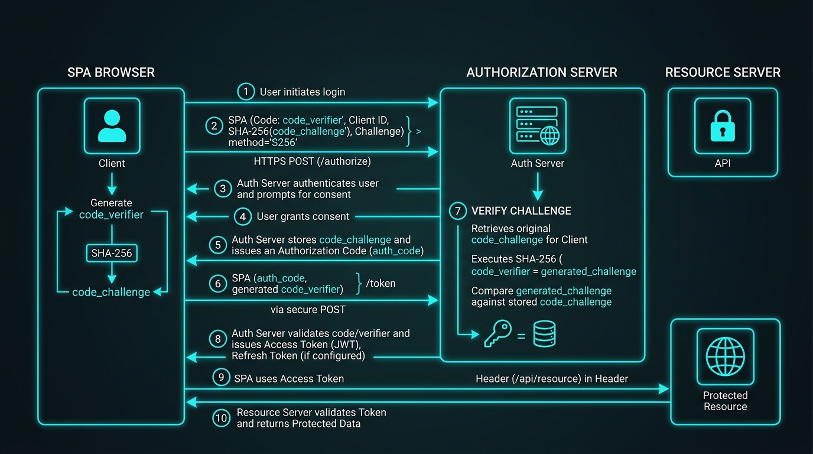

JSON Web Tokens (JWT) and OAuth 2.0 form the foundation of modern stateless authentication across microservices, mobile applications, and single-page apps (SPAs). However, improper signature verification, key reuse, or flawed token storage can instantly compromise your application security boundary.

Figure 1: Anatomy of a JSON Web Token (Header, Payload, Signature).
1. Anatomy & Structure of a JWT
A JWT (RFC 7519) is a compact, URL-safe string composed of three distinct Base64Url-encoded sections joined by periods (.):
// Format: [Header] . [Payload] . [Signature]
eyJhbGciOiJSUzI1NiIsInR5cCI6IkpXVCJ9 . eyJzdWIiOiIxMjM0NTY3ODkwIiwibmFtZSI6IkhhcnNoaXQiLCJpYXQiOjE1MTYyMzkwMjJ9 . SflKxwRJJS...
1. Header
Defines metadata including token type (JWT) and the cryptographic signing algorithm used (e.g. HS256 or RS256).
2. Payload (Claims)
Contains statements about an entity (typically the user) and additional metadata. Standard registered claims include:
iss(Issuer): Identifies the principal that issued the JWT.sub(Subject): Identifies the subject of the JWT (e.g. user ID).aud(Audience): Identifies the recipients that the JWT is intended for.exp(Expiration Time): Timestamp after which the JWT MUST NOT be accepted.iat(Issued At): Timestamp when the JWT was created.jti(JWT ID): Unique identifier to prevent token replay attacks.
Base64Url encoding is NOT encryption! Anyone who captures a JWT can decode and view claims in plain text using atob() or jwt.io. Never store passwords, PINs, or raw API secrets inside unencrypted JWT payloads.
2. Cryptographic Signing: HS256 vs. RS256
| Property | HS256 (HMAC SHA-256) | RS256 (RSA Signature SHA-256) |
|---|---|---|
| Architecture | Symmetric (Single Secret Key) | Asymmetric (Private Key signs, Public Key verifies) |
| Key Distribution | All microservices must share the secret key. | Only Auth Server holds Private Key. All API microservices fetch Public JWKS keys. |
| Security Risk | If 1 service leaks secret, all services can forge tokens. | Zero leakage risk from downstream verification services. |
3. Code Example: RS256 Verification in Node.js
// Verifying RS256 JWT using Public Key in Node.js
const jwt = require('jsonwebtoken');
const fs = require('fs');
const publicKey = fs.readFileSync('./public.pem', 'utf8');
try {
const decoded = jwt.verify(token, publicKey, {
algorithms: ['RS256'],
issuer: 'https://auth.gyanki-baat.com',
audience: 'https://api.gyanki-baat.com'
});
console.log('Token verified for user:', decoded.sub);
} catch (err) {
console.error('Invalid token signature or expired token:', err.message);
}
4. Major JWT Attack Vectors & Security Mitigations
1. The "alg: none" Vulnerability
If an authorization library accepts {"alg": "none"} in the header, an attacker can modify claims (e.g., role: "admin") and strip the signature entirely. Always hardcode explicit allowed algorithms in your verification options.
2. Algorithm Confusion Attack (RS256 to HS256)
If an API server expects RS256 but doesn't restrict algorithms, an attacker can obtain the server's public RSA key (which is public knowledge) and use it as a symmetric HMAC key to sign forged tokens using HS256!
5. OAuth 2.0 Framework & PKCE (Proof Key for Code Exchange)

Figure 2: OAuth 2.0 PKCE verifier and challenge security exchange.
OAuth 2.0 is an authorization framework allowing third-party applications to access HTTP resources on behalf of a resource owner.
Why PKCE (RFC 7636) is Mandatory for SPAs & Mobile Apps
Public clients (React/Vue SPAs, iOS/Android apps) cannot securely hide client secrets. **PKCE** eliminates authorization code theft by dynamically generating a cryptographic code_verifier (random secret) and code_challenge (SHA256 hash of verifier) for every authorization request:
- Client generates
code_verifierand computescode_challenge = Base64(SHA256(code_verifier)). - Client sends
code_challengeto Auth Server during initial redirect. - Auth Server responds with Authorization Code.
- Client exchanges code for tokens by sending the original
code_verifier. Auth Server hashes it and verifies match!
6. Refresh Token Rotation & Token Storage Debate
- Access Tokens: Short-lived (5-15 mins). Kept in memory (JS variable / Web Worker) or HttpOnly SameSite Cookie.
- Refresh Tokens: Long-lived (7-30 days). Stored strictly in
HttpOnly,Secure,SameSite=Strictcookies. - Automatic Rotation: Whenever a Refresh Token is used, invalidate it and issue a new pair. If a revoked Refresh Token is presented, immediately revoke all tokens belonging to that family (Reuse Detection).
💬 Community Discussion
Where does your team store access tokens in modern SPA architectures? Let's discuss on LinkedIn!